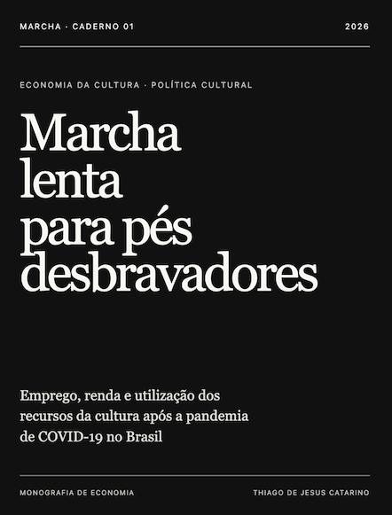

PUBLICAÇÃO PRINCIPAL · MARCHA 2026
MARCHA — Caderno 1
Emprego, renda e utilização dos recursos da cultura após a pandemia de COVID-19 no Brasil

ECONOMIA DA CULTURA · POLÍTICA CULTURAL
Quem consegue transformar recursos culturais em política pública?
O caderno investiga como os municípios brasileiros executaram os recursos da Lei Paulo Gustavo e analisa os vínculos entre sua utilização e características municipais.
Os resultados são apresentados com atenção aos seus limites: associações observadas entre utilização e características municipais não demonstram causalidade, e a análise não identificou efeitos estatisticamente significativos nos indicadores de emprego e renda estudados.
A capa abre o documento para leitura no navegador. O arquivo editável está disponível em separado.
Ver pergunta, resultados e acervo de apoio ↗